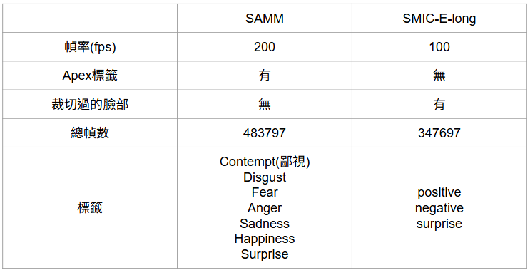
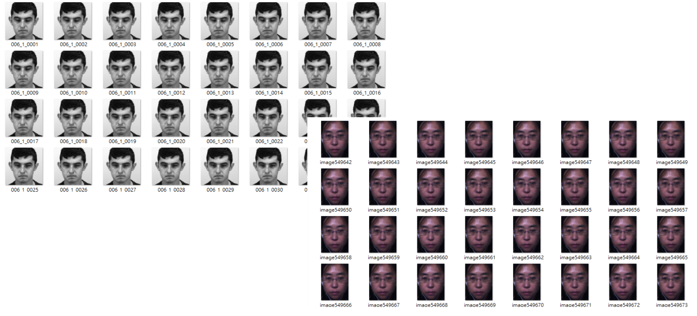
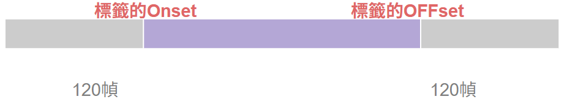
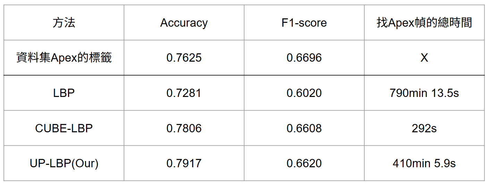
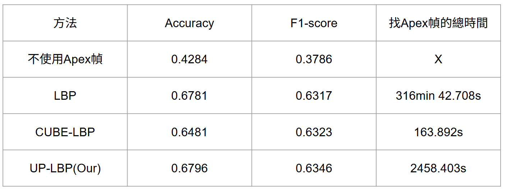

實驗
Dataset
多數資料集為提供Apex、Offset與Onset幀的標籤，所以選擇以下的資料集來測試我們的方法，並透過提取特定範圍的幀來模擬其他未提供微表情幀標籤的資料集。每個實驗為了準確性，會將30次的實驗結果作平均。

使用的資料集

資料集是以圖片的方式儲存，每張圖片代表一個幀，例如一個1秒100幀的影片會有6000張圖片
一般資料集沒有提供onset跟offset幀的兩個標籤，如DAiSEE，所以我們根據這兩個標籤往前跟往後提取固定幀數來模擬其他資料集的狀況。且由於兩個資料集的幀數不同，我們採用不同的幀數提取各自的圖片，但實際時間都大約為1.2秒

SAMM的資料集:透過資料集提供的標籤，往前往後各提取250幀，作為實驗的影片

SMIC_HS的資料集:透過資料集提供的標籤，往前往後各提取120幀，作為實驗的影片

SAMM的的實驗結果: 根據上圖，我們的方法優於其他方法，但是Cube-LBP的實驗結果與我們很接近，且時間更少
